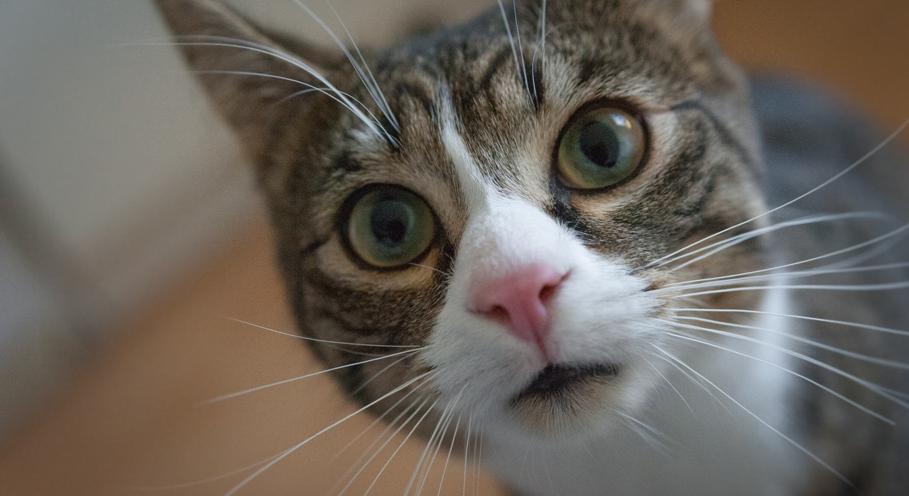
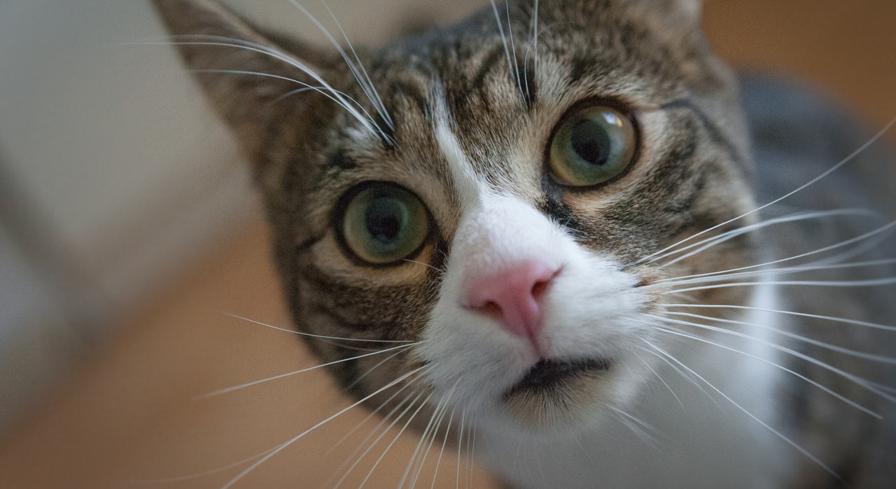

1. Menurunkan risiko penyakit jantung
Sama seperti memelihara anjing, memelihara kucing juga mampu menurunkan tingkat stres. Riset menemukan pula bahwa memelihara kucing memberikan dampak pada risiko penyakit kardiovaskular atau jantung.
 

Photo by mali maeder from Pexels

Menurunkan risiko penyakit jantung.
Membantu anak penderita autisme.
Jadi, masih butuh alasan kenapa Anda harus memelihara kucing?
Okey, Kami akan memberikan alasan lainnya.
Membantu menyembuhkan nyering tulang, sendi dan otot.
Mengurangi infeksi, masalah pernapasan dan alergi
Sama seperti memelihara anjing, memelihara kucing juga mampu menurunkan tingkat stres. Riset menemukan pula bahwa memelihara kucing memberikan dampak pada risiko penyakit kardiovaskular atau jantung.
Para peneliti dari University of Missouri, Amerika Serikat menemukan bahwa interaksi sosial anak penderita autisme membaik secara dramatis ketika dikelilingi hewan peliharaan. Dalam studi itu, hampir separuh dari total keluarga yang diteliti memiliki kucing peliharaan. Para orang tua dalam keluarga-keluarga tersebut pun melaporkan ikatan kuat yang terbentuk antara mereka dan anak-anak.
suara dengkuran kucing juga memiliki kemampuan penyembuhan bagi nyeri tulang dan otot manusia. Ini terkait dengan frekuensi getaran dengkuran kucing yang berada pada kisaran 20-140 Hz. Sebuah studi pun menunjukkan bahwa frekuensi getaran antara 18-35 Hz memiliki efek positif pada persendian setelah cedera.
Riset yang dipimpin oleh peneliti hewan peliharaan June Nichols menemukan bahwa perempuan cenderung lebih tertarik pada pria yang memiliki hewan peliharaan. Sebanyak 90 persen perempuan lajang yang disurvei juga memandang pria yang memelihara kucing cenderung lebih baik dan penyayang.
Penelitian yang dilakukan terhadap anjing dan kucing menemukan bahwa anak yang memiliki kontak dengan kedua hewan peliharaan tersebut pada tahun pertama kehidupan memiliki sistem daya tahun tubuh yang lebih baik, khususnya terhadap gangguan pernapasan. Studi juga menemukan, anak-anak yang terpapar alergen kucing memiliki daya tahan tubuh lebih baik. Anak-anak di perkotaan yang paling terpapar alergen dan bakteri mengembangkan pertahanan yang lebih baik terhadap alergi. Mereka yang terpapar kucing di tahun pertama lebih kecil kemungkinannya untuk mengembangkan alergi.
Dalam survei yang dilakukan Cats Protection terhadap 600 responden yang separuhnya memiliki masalah kesehatan mental, sebanyak 87 persen responden yang memelihara kucing merasakan efek positif pada kehidupan mereka.
Studi yang dilakukan para peneliti di Indiana University Bloomington terhadap 7.000 orang menemukan bahwa menonton video kucing meningkatkan emosi dan energi positif, serta menurunkan perasaan negatif.
*Artikel ini telah tayang di Kompas.com dengan judul "Studi Buktikan, Ini 7 Manfaat Memelihara Kucing".
Baiklah! Itulah beberapa alasan mengapa Anda harus memelihara kucing.